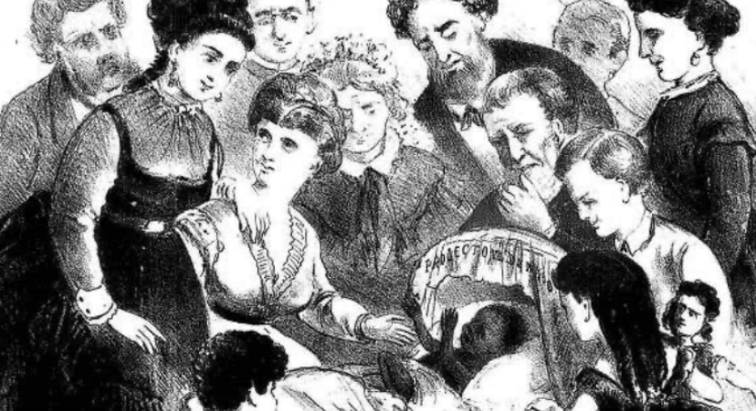

1870
A lei do ventre livre de 1871 determinou que, de 28 de setembro de 1871 em diante, as mulheres escravizadas dariam à luz apenas bebês livres. De acordo com a lei, não nasceria mais nenhum escravizado em solo brasileiro.
Os bebês, na realidade, não seriam livres de verdade. Grosso modo, a Lei do Ventre Livre estabeleceu que os filhos permaneceriam junto da mãe escravizada, vivendo no cativeiro, até os 8 anos de idade. Dos 8 aos 21 anos, continuariam na propriedade do senhor ou, se ele não os quisesse mais, ficariam sob a tutela do Estado.
O poder público, contudo, não se preparou para cuidar das crianças que completassem 8 anos. Elas, então, permaneceram nas fazendas, trabalhando como se fossem escravizadas. Na prática, a liberdade prevista na Lei do Ventre Livre só viria mesmo na idade adulta, aos 21 anos.
Apesar dela ter sido aprovada com certa pressa, houve muito tumulto por parte dos donos de escravos já que os mesmos não queriam perder a mão de obra barata. Os senhores de fazendas usavam o argumento de que os outros escravos mais velhos ficariam revoltados em ver semelhantes a eles serem livres sem passar pelo que eles passaram. Os deputados aprovaram o projeto da Lei do Ventre Livre em três meses e meio. Os senadores, logo depois, em apenas três semanas. A lei foi imediatamente sancionada pela princesa Isabel, que dirigia o Império em razão de uma viagem de D. Pedro II ao exterior.
